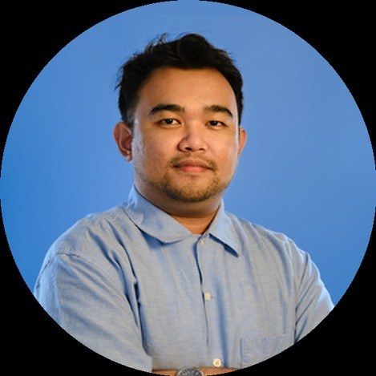

I pair hands-on engineering with leadership — staying close to architecture, code, and DevOps while managing distributed teams across the Philippines and South Africa. Focused on cloud-native and event-driven systems on Azure, API-led integration, and bringing agentic AI tooling into engineering workflows.

From PHP developer to engineering head — the through-line has always been ownership.
I'm currently the Head of Software Engineering at YouSource Inc. My background spans software development, project management, and engineering leadership — starting from PHP and later specializing in .NET. Over time, my focus has grown into leading teams, aligning stakeholders, and helping build stronger engineering culture through structure, mentorship, and execution.
I reached senior level in five years as a prerequisite for the project management transition, managed eight concurrent projects while still doing resource allocation, deployments, and code reviews, and today I drive the adoption of agentic AI tooling and modern stacks across the division.
As a project manager, I keep clients, stakeholders, and product owners aligned through backlog grooming — making sure the clients are happy and the dev team isn't stressed by the workload. Harmony.
Strong teams do not happen by accident. A lead has to actively help raise the team's judgment and confidence over time.
I can put myself in other people's shoes and see through their perspective.
I thrive on routine, clear rules, and procedure. I treat people the same.
I turn thoughts into action — and initiate as soon as I'm able.
I always seek areas of agreement.
I accumulate information, ideas, artifacts, and relationships for eventual use.
Years of hands-on experience, plus the full toolbox.
Across every phase, my role is to bridge the technical and organizational sides — right tooling, solid processes, reliable and secure delivery.
Azure Boards for backlogs, epics, and sprint planning. Scope defined with stakeholders and mapped to infrastructure needs.
Guiding service choices — App Services vs. SWA vs. Functions, SQL vs. Cosmos DB, Event Hub vs. Service Bus — based on scalability and cost.
Azure Repos / GitHub with enforced branching strategies, code review standards, and static analysis in the pipeline.
Multi-stage Azure Pipelines with environment gates, approvals, and automated testing. Repeatable, auditable deployments.
Azure AD identity, RBAC across subscriptions, secrets in Key Vault, and Azure Policy alignment with security teams.
Quality gates embedded in pipelines — unit, integration, and load testing. I own the go/no-go decision for releases.
Observability via Azure Monitor, App Insights, and Log Analytics. Alerting, dashboards, SLAs, and incident response leadership.
Azure Cost Management reviews, resource rightsizing, and cloud spend forecasting with Finance.
Eight years of growth at YouSource Inc. — developer to division head.
17 client engagements across 8 years — as developer, team lead, and project manager. Client names available on request.
Full-stack delivery across fintech, compliance, crowdfunding, and data-labeling platforms — PHP, .NET, and Angular. Led consecutive projects end to end.
Banking, healthcare, and e-commerce systems. Transitioned to project management while providing code reviews, deployments, and resource allocation across teams.
Managed up to 8 concurrent projects — backlog grooming with stakeholders, delivery ownership, and a product-design track for pre-MVP prototyping.
Bachelor's Degree in Computer Science
Major in Health Informatics
Open to conversations about engineering leadership, Azure architecture, and agentic AI in real-world delivery workflows.